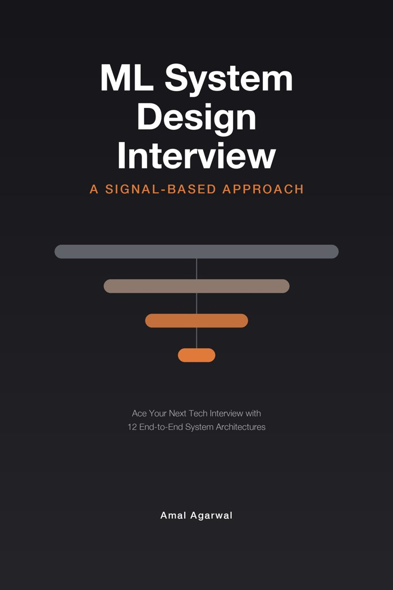

Available nowML system design round
ML System Design Interview: A Signal-Based Approach
- Twelve structurally different systems, from recommendations and ads to RAG and LLM serving
- One 8-step framework for any ML design question
- Past the model: serving, monitoring, failure modes
New grad to staff. Paperback and Kindle, 537 pages.